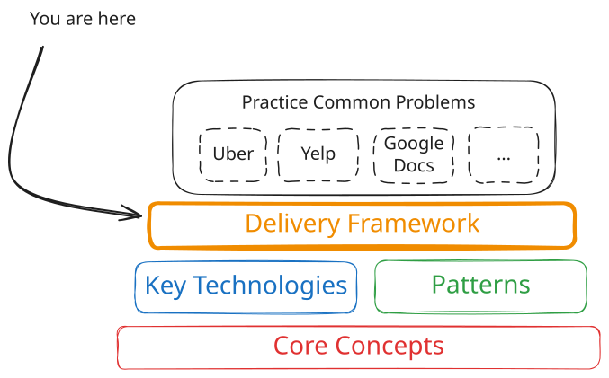
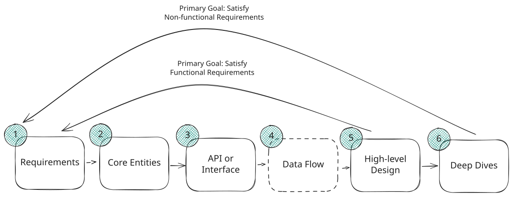
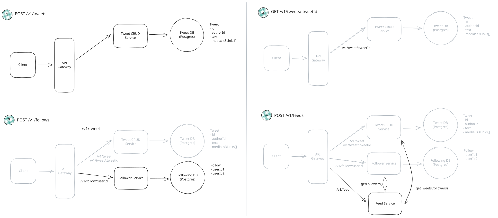

System Design in a Hurry
Delivery Framework
The best way to structure your system design interviews to structure your thoughts and focus on the most important aspects, built by FAANG managers and staff engineers.
The easiest way to sabotage your chances of getting an offer in your system design interview is to fail to deliver a working system. This is the most common reason that mid-level candidates fail these interviews and it often manifests as the opaque "time management". This issue isn't (always) that you need to work twice as fast — many times you just need to focus on the right things.

Overall Structure
Our delivery framework is a sequence of steps and timings we recommend for your interview. By structuring your interview in this way, you'll stay focused on the bits that are most important to your interviewer. An added benefit is that you'll have a clear path to fall back if you're overwhelmed. Many candidates are (understandably!) nervous in their interview. It's easy to get lost if you aren't building up a solution in a linear way.
While a firm structure to your approach is important and your interviewer is not trained specifically to assess you on your delivery (often this gets bucketed into "communication"), in practice we've seen many candidates that perform significantly better by following a structure which both keeps them from getting stuck and ensures they deliver a working system.
Here's the framework!

Recommended system design interview structure
Requirements (~5 minutes)
The goal of the requirements section is to get a clear understanding of the system that you are being asked to design. To do this, we suggest you break your requirements into two sections.
1) Functional Requirements
Functional requirements are your "Users/Clients should be able to..." statements. These are the core features of your system and should be the first thing you discuss with your interviewer. Oftentimes this is a back and forth with your interviewer. Ask targeted questions as if you were talking to a client, customer, or product manager ("does the system need to do X?", "what would happen if Y?") to arrive at a prioritized list of core features.
For example, if you were designing a system like Twitter, you might have the following functional requirements:
- Users should be able to post tweets
- Users should be able to follow other users
- Users should be able to see tweets from users they follow
A cache meanwhile might have requirements like:
- Clients should be able to insert items
- Clients should be able to set expirations
- Clients should be able to read items
Keep your requirements targeted! The main objective in the remaining part of the interview is to develop a system that meets the requirements you've identified -- so it's crucial to be strategic in your prioritization. Many of these systems have hundreds of features, but it's your job to identify and prioritize the top 3. Having a long list of requirements will hurt you more than it will help you and many top FAANGs directly evaluate you on your ability to focus on what matters.
2) Non-functional Requirements
Non-functional requirements are statements about the system qualities that are important to your users. These can be phrased as "The system should be able to..." or "The system should be..." statements.
For example, if you were designing a system like Twitter, you might have the following non-functional requirements:
- The system should be highly available, prioritizing availability over consistency
- The system should be able to scale to support 100M+ DAU (Daily Active Users)
- The system should be low latency, rendering feeds in under 200ms
It's important that non-functional requirements are put in the context of the system and, where possible, are quantified. For example, "the system should be low latency" is obvious and not very meaningful—nearly all systems should be low latency. "The system should have low latency search, < 500ms," is much more useful as it identifies the part of the system that most needs to be low latency and provides a target.
Coming up with non-functional requirements can be challenging, especially if you're not familiar with the domain. Here is a checklist of things to consider that might help you identify the most important non-functional requirements for your system. You'll want to identify the top 3-5 that are most relevant to your system.
- CAP Theorem: Should your system prioritize consistency or availability? Note, partition tolerance is a given in distributed systems.
- Environment Constraints: Are there any constraints on the environment in which your system will run? For example, are you running on a mobile device with limited battery life? Running on devices with limited memory or limited bandwidth (e.g. streaming video on 3G)?
- Scalability: All systems need to scale, but does this system have unique scaling requirements? For example, does it have bursty traffic at a specific time of day? Are there events, like holidays, that will cause a significant increase in traffic? Also consider the read vs write ratio here. Does your system need to scale reads or writes more?
- Latency: How quickly does the system need to respond to user requests? Specifically consider any requests that require meaningful computation. For example, low latency search when designing Yelp.
- Durability: How important is it that the data in your system is not lost? For example, a social network might be able to tolerate some data loss, but a banking system cannot.
- Security: How secure does the system need to be? Consider data protection, access control, and compliance with regulations.
- Fault Tolerance: How well does the system need to handle failures? Consider redundancy, failover, and recovery mechanisms.
- Compliance: Are there legal or regulatory requirements the system needs to meet? Consider industry standards, data protection laws, and other regulations.
3) Capacity Estimation
Many guides you've read will suggest doing back-of-the-envelope calculations at this stage. We believe this is often unnecessary. Instead, perform calculations only if they will directly influence your design. In most scenarios, you're dealing with a large, distributed system – and it's reasonable to assume as much. Many candidates will calculate storage, DAU, and QPS, only to conclude, "ok, so it's a lot. Got it." As interviewers, we gain nothing from this except that you can perform basic arithmetic.
Our suggestion is to explain to the interviewer that you would like to skip on estimations upfront and that you will do math while designing when/if necessary. When would it be necessary? Imagine you are designing a TopK system for trending topics in FB posts. You would want to estimate the number of topics you would expect to see, as this will influence whether you can use a single instance of a data structure like a min-heap or if you need to shard it across multiple instances, which will have a big impact on your design.
Regardless of how you end up using it in the interview, learning to estimate relevant quantities quickly will help you quickly reason through design trade-offs in your design. Don't worry if you're not good at mental arithmetic under pressure, most people aren't.
Core Entities (~2 minutes)
Next you should take a moment to identify and list the core entities of your system. This helps you to define terms, understand the data central to your design, and gives you a foundation to build on. These are the core entities that your API will exchange and that your system will persist in a Data Model. In the actual interview, this is as simple as jotting down a bulleted list and explaining this is your first draft to the interviewer.
Why not list the entire data model at this point? Because you don't know what you don't know. As you design your system, you'll discover new entities and relationships that you didn't anticipate. By starting with a small list, you can quickly iterate and add to it as you go. Once you get into the high level design and have a clearer sense of exactly what state needs to update upon each request you can start to build out the list of relevant columns/fields for each entity.
For our Twitter example, our core entities are rather simple:
- User
- Tweet
- Follow
A couple useful questions to ask yourself to help identify core entities:
- Who are the actors in the system? Are they overlapping?
- What are the nouns or resources necessary to satisfy the functional requirements?
Aim to choose good names for your entities. While most problems are small enough that you could probably sub in foo and bar for any entity in your system, some interviewers use this as an opportunity to see whether you're any good at one of the hardest problems in computer science.
API or System Interface (~5 minutes)
Before you get into the high-level design, you'll want to define the contract between your system and its users. Oftentimes, especially for full product style interviews, this maps directly to the functional requirements you've already identified (but not always!). You will use this contract to guide your high-level design and to ensure that you're meeting the requirements you've identified.
You have a quick decision to make here -- which API protocol should you use?
REST (Representational State Transfer): Uses HTTP verbs (GET, POST, PUT, DELETE) to perform CRUD operations on resources. This should be your default choice for most interviews.
GraphQL: Allows clients to specify exactly what data they want to receive, avoiding over-fetching and under-fetching. Choose this when you have diverse clients with different data needs.
RPC (Remote Procedure Call): Action-oriented protocol (like gRPC) that's faster than REST for service-to-service communication. Use for internal APIs when performance is critical.
Don't overthink this. Default to REST unless you have a specific reason not to. For real-time features, you'll also need WebSockets or Server-Sent Events, but design your core API first.
For Twitter, we would choose REST and design our endpoints using our core entities as resources. Resources should be plural nouns that represent things in your system:
POST /v1/tweets
body: {
"text": string
}
GET /v1/tweets/{tweetId} -> Tweet
POST /v1/follows
body: {
"followee_id": string
}
GET /v1/feed -> Tweet[]Notice how we use plural resource names (tweets, not tweet). The current user is derived from the authentication token in the request header, not from request bodies or path parameters.
Never rely on sensitive information like user IDs from request bodies when they should come from authentication. Always authenticate requests and derive the current user from the auth token, not from user input.
[Optional] Data Flow (~5 minutes)
For some backend systems, especially data-processing systems, it can be helpful to describe the high level sequence of actions or processes that the system performs on the inputs to produce the desired outputs. If your system doesn't involve a long sequence of actions, skip this!
We usually define the data flow via a simple list. You'll use this flow to inform your high-level design in the next section.
For a web crawler, this might look like:
- Fetch seed URLs
- Parse HTML
- Extract URLs
- Store data
- Repeat
High Level Design (~10-15 minutes)
Now that you have a clear understanding of the requirements, entities, and API of your system, you can start to design the high-level architecture. This consists of drawing boxes and arrows to represent the different components of your system and how they interact. Components are basic building blocks like servers, databases, caches, etc. This can be done either in person on a whiteboard or virtually using whiteboarding software like Excalidraw. The Key Technologies section will give you a good sense of the most common components you'll need to know.
Ask your recruiter what software you'll be using for your interview and practice with it ahead of time. You don't want to be fumbling with the software during your interview.
Don't over think this! Your primary goal is to design an architecture that satisfies the API you've designed and, thus, the requirements you've identified. In most cases, you can even go one-by-one through your API endpoints and build up your design sequentially to satisfy each one.
Stay focused! It's incredibly common for candidates to start layering on complexity too early, resulting in them never arriving at a complete solution. Focus on a relatively simple design that meets the core functional requirements, and then layer on complexity to satisfy the non-functional requirements in your deep dives section. It's natural to identify areas where you can add complexity, like caches or message queues, while in the high-level design. We encourage you to note these areas with a simple verbal callout and written note, and then move on.
As you're drawing your design, you should be talking through your thought process with your interviewer. Be explicit about how data flows through the system and what state (either in databases, caches, message queues, etc.) changes with each request, starting from API requests and ending with the response. When your request reaches your database or persistence layer, it's a great time to start documenting the relevant columns/fields for each entity. You can do this directly next to your database visually. This helps keep it close to the relevant components and makes it easy to evolve as you iterate on your design. No need to worry too much about types here, your interviewer can infer and they'll only slow you down.
Don't waste your time documenting every column/field in your schema. For example, your interviewer knows that a User table has a name, email, and password hash so you don't need to write these down. Instead, focus on the columns/fields that are particularly relevant to your design.
For our simple Twitter example, here is how you might build up your design, one endpoint at a time:

High Level Design (~10-15 minutes)
Deep Dives (~10 minutes)
Astute readers probably noticed that our simple, high-level design of Twitter is going to be woefully inefficient when it comes to fetching users' feeds. No problem! That's exactly the sort of thing you'll iterate on in the deep dives section. Now that you have a high-level design in place you're going to use the remaining 10 or so minutes of the interview to harden your design by:
- Ensuring it meets all of your non-functional requirements
- Addressing edge cases
- Identifying and addressing issues and bottlenecks
- Improving the design based on probes from your interviewer.
The degree to which you're proactive in leading deep dives is a function of your seniority. More junior candidates can expect the interviewer to jump in here and point out places where the design could be improved. More senior candidates should be able to identify these places themselves and lead the discussion.
So for example, one of our non-functional requirements for Twitter was that our system needs to scale to >100M DAU. We could then lead a discussion oriented around horizontal scaling, the introduction of caches, and database sharding -- updating our design as we go. Another was that feeds need to be fetched with low latency. In the case of Twitter, this is actually the most interesting problem. We'd lead a discussion about fanout-on-read vs fanout-on-write and the use of caches.
A common mistake candidates make is that they try to talk over their interviewer here. There is a lot to talk about, sure, and for senior candidates being proactive is important, however, it's a balance. Make sure you give your interviewer room to ask questions and probe your design. Chances are they have specific signals they want to get from you and you're going to miss it if you're too busy talking. Plus, you'll hurt your evaluation on communication and collaboration.